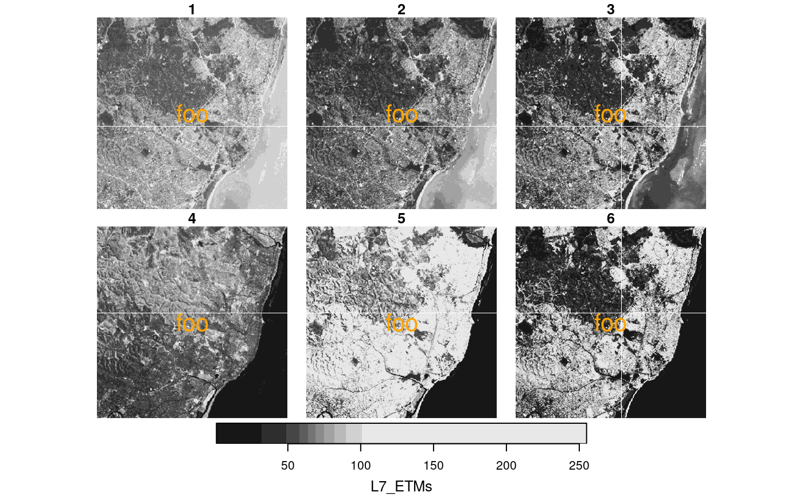
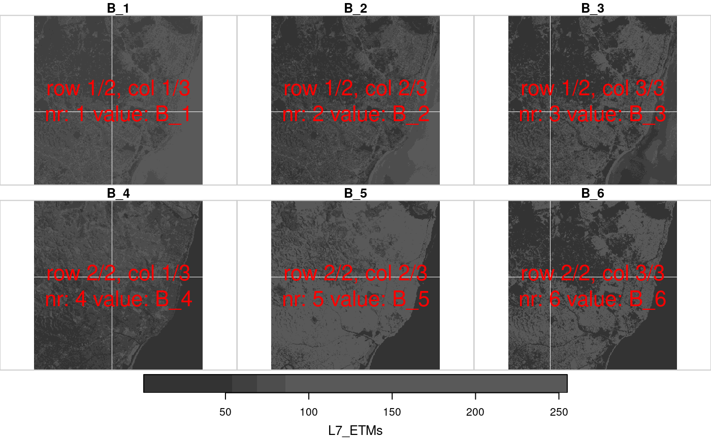
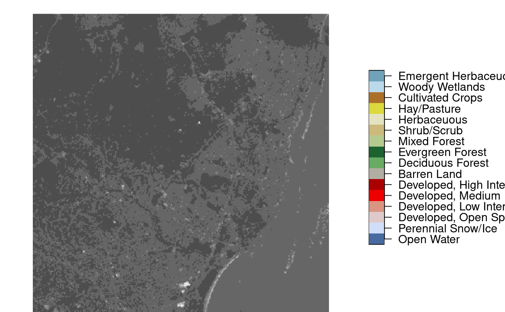

plot stars object, with subplots for each level of first non-spatial dimension
Source:R/plot.R, R/ncproxy.R, R/proxy.R
plot.Rdplot stars object, with subplots for each level of first non-spatial dimension, and customization of legend key
Usage
# S3 method for stars
plot(
x,
y,
...,
join_zlim = TRUE,
main = make_label(x, 1),
axes = FALSE,
downsample = TRUE,
nbreaks = 11,
breaks = "quantile",
col = grey(1:(nbreaks - 1)/nbreaks),
key.pos = get_key_pos(x, ...),
key.width = lcm(1.8),
key.length = 0.618,
key.lab = main,
reset = TRUE,
box_col = grey(0.8),
center_time = FALSE,
hook = NULL,
mfrow = NULL
)
# S3 method for stars
image(
x,
...,
band = 1,
attr = 1,
asp = NULL,
rgb = NULL,
maxColorValue = ifelse(inherits(rgb, "data.frame"), 255, max(x[[attr]], na.rm = TRUE)),
xlab = if (!axes) "" else names(d)[1],
ylab = if (!axes) "" else names(d)[2],
xlim = st_bbox(extent)$xlim,
ylim = st_bbox(extent)$ylim,
text_values = FALSE,
text_color = "black",
axes = FALSE,
interpolate = FALSE,
as_points = FALSE,
key.pos = NULL,
logz = FALSE,
key.width = lcm(1.8),
key.length = 0.618,
add.geom = NULL,
border = NA,
useRaster = isTRUE(dev.capabilities()$rasterImage == "yes"),
extent = x
)
# S3 method for nc_proxy
plot(x, y, ..., downsample = get_downsample(dim(x)), max_times = 16)
# S3 method for stars_proxy
plot(x, y, ..., downsample = get_downsample(dim(x)))Arguments
- x
object of class
stars- y
ignored
- ...
further arguments: for
plot, passed on toimage.stars; forimage, passed on toimage.defaultorrasterImage.- join_zlim
logical; if
TRUE, compute a single, joint zlim (color scale) for all subplots fromx- main
character; subplot title prefix; use
""to get only time, useNULLto suppress subplot titles- axes
logical; should axes and box be added to the plot?
- downsample
logical or numeric; if
TRUEwill try to plot not many more pixels than actually are visible, ifFALSE, no downsampling takes place, if numeric, the number of pixels/lines/bands etc that will be skipped; see Details.- nbreaks
number of color breaks; should be one more than number of colors. If missing and
colis specified, it is derived from that.- breaks
actual color breaks, or a method name used for classIntervals.
- col
colors to use for grid cells, or color palette function
- key.pos
integer; side to plot a color key: 1 bottom, 2 left, 3 top, 4 right; set to
NULLto omit key. Ignored if multiple columns are plotted in a single function call. Default depends on plot size, map aspect, and, if set, parameterasp.- key.width
amount of space reserved for width of the key (labels); relative or absolute (using lcm)
- key.length
amount of space reserved for length of the key (labels); relative or absolute (using lcm)
- key.lab
character; label for color key in case of multiple subplots, use
""to suppress- reset
logical; if
FALSE, keep the plot in a mode that allows adding further map elements; ifTRUErestore original mode after plotting- box_col
color for box around sub-plots; use
0to suppress plotting of boxes around sub-plots.- center_time
logical; if
TRUE, sub-plot titles will show the center of time intervals, otherwise their start- hook
NULL or function; hook function that will be called on every sub-plot; see examples.
- mfrow
length-2 integer vector with nrows, ncolumns of a composite plot, to override the default layout
- band
integer; which band (dimension) to plot
- attr
integer; which attribute to plot
- asp
numeric; aspect ratio of image
- rgb
integer; specify three bands to form an rgb composite. Experimental: rgb color table; see Details.
- maxColorValue
numeric; passed on to rgb
- xlab
character; x axis label
- ylab
character; y axis label
- xlim
x axis limits
- ylim
y axis limits
- text_values
logical; print values as text on image?
- text_color
character; color for printed text values
- interpolate
logical; when using rasterImage (rgb), should pixels be interpolated?
- as_points
logical; for curvilinear or sheared grids: parameter passed on to st_as_sf, determining whether raster cells will be plotted as symbols (fast, approximate) or small polygons (slow, exact)
- logz
logical; if
TRUE, use log10-scale for the attribute variable. In that case,breaksandatneed to be given as log10-values; see examples.- add.geom
object of class
sfc, or list with arguments toplot, that will be added to an image or sub-image- border
color used for cell borders (only in case
xis a curvilinear or rotated/sheared grid)- useRaster
logical; use the rasterImage capabilities of the graphics device?
- extent
object which has a
st_bboxmethod; sets the plotting extent- max_times
integer; maximum number of time steps to attempt to plot.
Details
Downsampling: a value for downsample of 0: no downsampling, 1: after every dimension value (pixel/line/band), one value is skipped (half of the original resolution), 2: after every dimension value, 2 values are skipped (one third of the original resolution), etc. If downsample is TRUE or a length 1 numeric vector, downsampling is only applied to the raster [x] and [y] dimensions.
To remove unused classes in a categorical raster, use the droplevels function.
When bitmaps show visual artefacts (Moiré effects), make sure that device png is used rather than ragg::agg_png as the latter uses antialiasing for filled polygons which causes this; see also https://github.com/r-spatial/stars/issues/573 .
use of an rgb color table is experimental; see https://github.com/r-spatial/mapview/issues/208
when plotting a subsetted stars_proxy object, the default value for argument downsample will not be computed correctly, and has to be set manually.
when plotting a subsetted stars_proxy object, the default value for argument downsample will not be computed correctly, and has to be set manually.
Examples
st_bbox(L7_ETMs) |> st_as_sfc() |> st_centroid() |> st_coordinates() -> pt
hook1 = function() {
text(pt[,"X"], pt[,"Y"], "foo", col = 'orange', cex = 2)
}
plot(L7_ETMs, hook = hook1)

x = st_set_dimensions(L7_ETMs, 3, paste0("B_", 1:6))
hook2 = function(..., row, col, nr, nrow, ncol, value, bbox) {
str = paste0("row ", row, "/", nrow, ", col ", col, "/", ncol, "\nnr: ", nr, " value: ", value)
bbox |> st_as_sfc() |> st_centroid() |> st_coordinates() -> pt
text(pt[,"X"], pt[,"Y"], str, col = 'red', cex = 2)
}
plot(x, hook = hook2, col = grey(c(.2,.25,.3,.35)))

if (isTRUE(dev.capabilities()$rasterImage == "yes")) {
lc = system.file("tif/lc.tif", package = "stars")
plot(read_stars(lc), key.pos=4, key.width=lcm(5))
}
tif = system.file("tif/L7_ETMs.tif", package = "stars")
x = read_stars(tif)
image(x, col = grey((3:9)/10))

if (isTRUE(dev.capabilities()$rasterImage == "yes")) {
image(x, rgb = c(1,3,5)) # false color composite
}